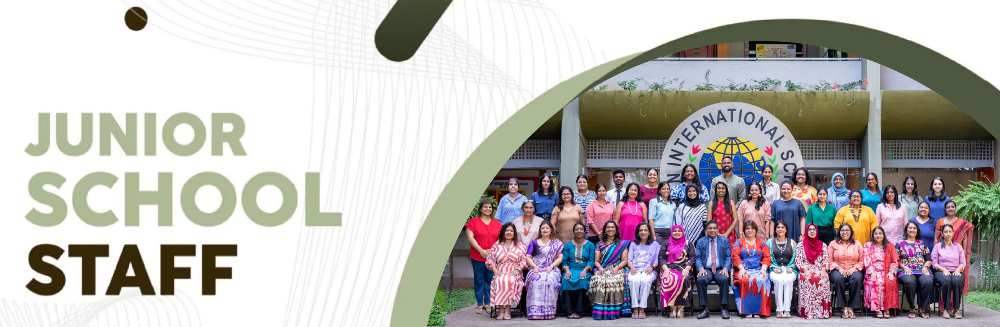
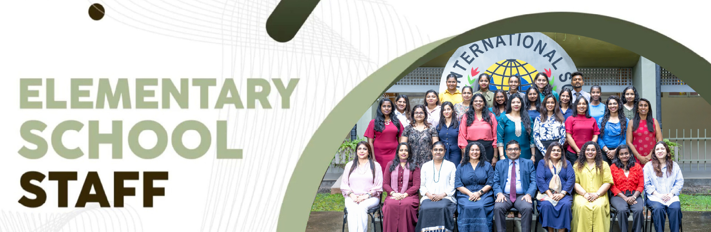
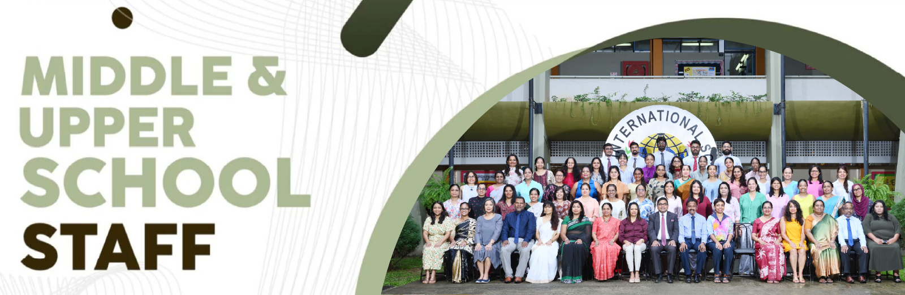

The Academic Staff of Asian International School are qualified, trained and experienced educators who ensure that our students receive a world-class education. Below is a list of our academic staff and their qualifications.
| Name | Qualifications |
|---|---|
| Mr Harshana D. Perera (Principal) | LLB, Univ. of Colombo; MBA, PIM (Univ. of Sri Jayewardenepura); Attorney-at-Law |
| Mr V Pathmanathan (Director of Studies) | B.Com., Univ. of Madras |
| Ms Iresha Senarath (Head of Middle School) | M.Ed, Open Univ. of Sri Lanka; PG Dip. in Education, Open Univ. of Sri Lanka; B.Sc. (Chemistry), Inst. of Chemistry (Ceylon) |
| Ms Aasha Jaleel (Head of Junior School) | B.A. (Social Sciences), Open Univ. of Sri Lanka; Higher Diploma in International Relations, Bandaranaike Centre for International Studies; Diploma in Early Childhood Course (MMI); Diploma in Special Needs Education, London School of Business & Social Sciences |
| Ms Krishni Goonewardene (Head of Elementary School) | B.Ed. (Educational Administration), Open Univ. of Malaysia; Diploma in Montessori Method of Education (A.M.I.), Maria Montessori Training Centre, St. Bridget's Convent; Diploma in Special Needs Education, London School of Business & Social Sciences |
| Ms Sashini Tissaaratchy (Head of Battaramulla School) | M.B.A, Univ. of Bedfordshire, UK; PG Dip. in Marketing, CIM, UK; Diploma in Montessori Method of Education, Havelock Gardens Training Centre; Diploma in Special Needs Education, Ladies' College Institute of Professional Studies |
| Name | Qualifications |
|---|---|
| Ms Lashanthi Ediriwickrama (Dept. Head of Accounting, Business & Commerce) | M.Ed., Open Univ. of Sri Lanka; PG Dip. in Education, Open Univ. of Sri Lanka; B.Com., Univ. of Delhi, India; Advanced Diploma in Management Accounting, CIMA |
| Ms Logeshwari Sureshkumar (Dept. Head of Biology) | M.B.A., Univ. of Missouri, USA; B.Sc. (Botany), Univ. of Bharathiar, South India |
| Ms Ajantha Edirisinghe (Dept. Head of Chemistry) | M.Phil, Open Univ. of Sri Lanka; B.Sc. (Chemistry), Inst. of Chemistry (Ceylon); M.I. Chem. C (Chartered Chemist) |
| Ms Dilukshi Samarasinghe (Dept. Head of Economics) | M.B.A., C.D.A. College; B.B.A. (Special), Univ. of Colombo |
| Ms Vindhya Abeykoon (Dept. Head of English) | B.A., Univ. of Peradeniya |
| Ms Lakmalie Dissanayake (Dept. Head of Geography) | B.A. (Hons) Political Science, Univ. of Peradeniya |
| Mr Razmi Zahir (Dept. Head of ICT) | M.A. in Education, IGNOU, India; PG Dip. in Advanced Computing, Univ. of Colombo; B.Sc. (Hons) Information Systems, Manchester Metropolitan Univ., U.K. |
| Ms Dharshini Ariyaratne (Dept. Head of Languages) | PG Dip. in Women's Studies, Univ. of Colombo; B.A., Univ. of Kelaniya; Diplome de Langue Francaise; Diplome Superieur d'Etudes Francais Modernes |
| Ms Ramila Wickramasinghe (Dept. Head of Mathematics) | B.Sc. (Hons), Univ. of Kelaniya |
| Mr Ruwan Fernando (Dept. Head of Physics) | B.Sc. (Hons) Physics, Univ. of Colombo; P.G.S. Secondary Teaching Course |
| Ms Jayanga Samarawickrama (Coordinator IGCSE) | M.Ed., Asia e University, Malaysia; B.Sc. (Hons) Pharmacy, Univ. of Colombo; Cambridge Diploma for Teachers & Trainers |
| Ms Helen Anandakrishnan (A/Level, AS Level & IGCSE Examinations Officer) | M.A., B.A. Public Administration, Univ. of Madras |
| Ms Natasha Senanayake (Choral & Music Director) | Master of Music (Composition), King's College London, UK; Bachelor of Music (Composition), Petrie School of Music, Converse College, USA; Associate of the Trinity College of Music, UK (Pianoforte); Former Commonwealth Music Ambassador |
| Ms Ishanthi Perera (Head of Student Support Services) | Master of Applied Disability Studies (Specializing in Applied Behaviour Analysis), Brock University, Canada; B.Sc. (Hons) in Psychology specializing in exceptionality in human learning, Univ. of Toronto, Canada |
| Ms Rebecca de S Wijeyeratne (Head of Libraries) | B.A. (Hons) in Library & Information Studies, Open Univ. of Sri Lanka |
| Ms Nihara Bagoos (Dept. Head of Sports/Sports Coordinator) | District Representative (Netball) '97 Western Province Athlete 1997-2000 |
| Ms Romesh Ranasinghe (University Guidance Counsellors) | LLB., Univ. of Colombo; M.B.A., Univ. of Sri Jayewardenepura; M.Ed., Monash University; Professional Certificate in Adolescent Counselling, Univ. of Monash; P.G. Certificate in Human Resource Management, Univ. of Sri Jayewardenepura |
| Ms Mihiree Hettiaratchi | M.A. Teaching English Literature in a Second Language Content, Open Univ. of Sri Lanka; B.A. (English), Edith Cowan Univ., Western Australia |
| Name | Qualifications |
|---|---|
| Ms Rahadhya Abayakoon | B.Sc. (Hons) in Psychology, Univ. of Northampton, UK; Diploma in Child Psychology, CIIHE |
| Ms Dilumi Amarasinghe | B.Ed. (TESL), Open Univ. of Malaysia; French Language, Avancée – Alliance Francaise de Colombo; Diploma in English Language Teaching, Lyceum Academy for Teacher Education |
| Ms Nishika Atkinson | M.A. Education (Distinction), Univ. of Nottingham, UK; Bachelor of Laws (Hons), Univ. of London |
| Ms Nusrath Bahaudeen | M.Ed., Asia e University, Malaysia; Pg Dip. in Education, Open University of Sri Lanka; Chartered Institute of Management Accountants (CIMA-UK) - passed finalist |
| Ms Abiramy Balasubramaniyam | M.Sc. in Disaster Management, Univ. of Peradeniya; B.A. (Hons) in Geography, Univ. of Peradeniya |
| Dr Udika Bandara | Ph.D. Applied & Industrial Mathematics, Univ. of Louisville, USA; M.A. Applied & Industrial Mathematics, Univ. of Louisville, USA; B.Sc. Physical Science, Univ. of Sri Jayewardenepura |
| Ms Shule Bari | B.A. (Hons) Economics & Business Studies, Univ. of Manchester, UK |
| Ms Husna Bawa | PG Dip. in Education, Univ. of Colombo; BIT, Univ. of Colombo |
| Ms Nilanthi Chandrarathne | M.A. in Gender & Women's Studies, Univ. of Colombo; English trained Teacher, Pasdunrata English Teacher Training College |
| Ms Amali de Silva | M.A. in Linguistics, Univ. of Kelaniya; B.A. in English, Univ. of Sri Jayewardenepura |
| Ms Sandali de Zoysa | B.Sc. (Triple Major) Chemistry, Microbiology & Biotechnology, Jain Univ., India |
| Ms Prasadika Ediriweera | PG Dip. in Education, Open Univ. of Sri Lanka; B.A. (Hons) History, Univ. of Colombo |
| Ms Mihiri Fernando | B.A. (Special) Visual Arts, Univ. of Visual & Performing Arts |
| Mr Sujeewa Godage | PG Dip. in Industrial Mathematics, Univ. of Peradeniya; B.Sc., Univ. of Peradeniya |
| Ms Harindi Hamangoda | M.B.A., Anglia Ruskin Univ., U.K.; B.Sc. Management Information Systems, National Uni. of Ireland, Dublin; Higher Diploma in Computer based Information Systems, NIBM |
| Ms Mihiree Hettiaratchi | M.A. Teaching English Literature in a Second Language Content, Open Univ. of Sri Lanka; B.A. (English), Edith Cowan Univ., Western Australia |
| Ms Alefiyah Husain Patel | B.Sc. (Hons) in Psychology, Coventry Univ., UK; Diploma in Special Needs Education, Ladies' College Institute of Professional Studies |
| Ms Maithrie Jayamanne | M.Sc. in Applied Statistics, Univ. of Colombo; B.Sc. Mathematics & Economics, Univ. of London; Diploma in Economics, Univ. of London; Licentiate of Trinity College London (LTCL) in Piano Performance |
| Mr Thilina Jayasinghe | B.Sc., Univ. of Ruhuna Sri Lanka |
| Mr Nipuna Jayatunge | B.Sc. (Hons) Physics, Univ. of Liverpool |
| Ms Amitha Jayawardena | B.Sc. (Hons) Chemistry, Univ. of Peradeniya |
| Ms Kushani Jayawardena | B.A., Univ. of Kelaniya |
| Ms Nilushi Kalupathirana | M.Eng. (Hons) Chemical with Biochemical Engineering, University College London |
| Ms Crystal Kalyanaratne | B.Sc. Economics & Management, Univ. of London; Intermediary in Applied Banking & Finance, Institute of Banker's of Sri Lanka |
| Ms Ramona Kannangara | M.Sc. Applied Psychology with an emphasis in Child Psychology, Coventry University; B.Sc. (Hons) Psychology, Missouri University of Science & Technology |
| Ms Aparna Silva Kishore | M.A., Univ. of Kelaniya; B.A. (Hons) History, Univ. of Delhi, India |
| Mr Indrachapa Kuruppu | M.Msc. (Metaphysics), Univ. of Sedona, AZ, USA; B.Msc. (Metaphysics), Univ. of Metaphysics, USA |
| Ms Tharaka Malagoda | Master of Financial Economics, Univ. of Colombo; PG Dip. in Financial Mathematics, Univ. of Moratuwa; B.Sc. Management, Univ. of London; Access Arrangements for General Qualifications - Communicate-Ed |
| Ms Zuleyha Markar | LLB (Hons), Univ. of London; Attorney-at-Law |
| Ms Minoli Peiris | B.A., Univ. of Peradeniya |
| Ms Reena Perera | B.Sc. (Hons) Psychology, Univ. of Mumbai, India; Diploma in French, Alliance Francaise de Colombo; CMFAS Certification, Capital Markets & Financial Advisory Services, Singapore |
| Ms Deepika Peris | B.A. in English & English Language Teaching, The Open Univ. of Sri Lanka |
| Ms Nishanka Pitadeniya | M.B.A. Marketing, Univ. of Bedfordshire, UK; B.A. (Hons) Economics, Univ. of Colombo |
| Mr Saman Poonehela | B.Sc. Electrical Engineering, Univ. of Moratuwa |
| Ms Nirudi Pussewela | B.A., Univ. of Delhi, India; B.A. English & English Language Teaching, Open Univ. of Sri Lanka; AMI Cambridge Diploma in Montessori with Child Psychology, Cambridge College of Higher Education |
| Ms Dinesha Rajapakse | M.Sc. Environmental Science, Univ. of Colombo; PG Dip. in Education, Open Univ. of Sri Lanka; B.Sc. (Hons), Univ. of Colombo; Attorney-at-Law |
| Ms Hema Ramakrishna | B.Com., Univ. of Madras, India |
| Ms Romesh Ranasinghe | LLB., Univ. of Colombo; M.B.A., Univ. of Sri Jayewardenepura; M.Ed., Monash University; Professional Certificate in Adolescent Counselling, Univ. of Monash; P.G. Certificate in Human Resource Management, Univ. of Sri Jayewardenepura |
| Ms Mihiri Ratnasuriya | M.A. (Business Economics), Univ. of Sri Jayewardenepura; B.Sc. Business Administration (Information Systems), Univ. of Sri Jayewardenepura; CIMA Passed Finalist; Advanced Diploma in Management Accounting - CIMA |
| Ms Nirmani Rodrigo | B.Sc. in Physical Sciences, Univ. of Sri Jayewardenepura |
| Ms Tharindi Sabaragamuwa | M.B.A., Univ. of Bedfordshire, UK; B.A. (Hons) in English, Cinec Campus; Diploma in Primary Teacher Training, American College of Higher Education |
| Ms Jayanga Samarawickrama | M.Ed., Asia e University, Malaysia; B.Sc. (Hons) Pharmacy, Univ. of Colombo; Cambridge Diploma for Teachers & Trainers |
| Ms Chathushka Seekkubadu | M.Sc. Mathematics Education, Univ. of Colombo; B.Sc. Physical Science, Univ. of Colombo |
| Mr Manuja Senarathne | B.Sc., Univ. of Sri Jayewardenepura |
| Ms Muditha Seneviratne | OTHM (UK) Level 7 Diploma in Education Management & Leadership; B.Sc. (Agriculture) Sp. in Food Sciences & Technology, Univ. of Peradeniya |
| Ms Shannon Seneviratne | Bachelor of Laws (Hons), Univ. of Staffordshire, UK |
| Ms Niveditha Shandru | B.B.A. in Management, Northwood Univ., USA |
| Ms Suba Shangar | MPAcc, Univ. of Sri Jayewardenepura; OTHM (UK) Level 7 – Diploma in Education Management & Leadership, British Graduate School; PG Dip. in Computer Applications; B.B.A., Bharathidasan Univ. Trichy, India |
| Ms Chammi Vithanage | B.Sc. (Science), Univ. of Colombo; B.Sc. (Chemistry), Inst. of Chemistry |
| Ms Nilma Weerasinghe | MIT (Master of Information Technology), Univ. of Colombo School of Computing; B.C.A., Univ. of Bangalore, India; B.A., Univ. of Sri Jayewardenepura |
| Ms Ruwani Wijetunga | B.Sc. (Hons) Computing & Information Systems, Metropolitan Univ., London; SCJP - Sun Micro Systems, USA |
| Ms Jumana Lukmanjee | M.A. in teaching English Literature (RDG), Open Univ. of Sri Lanka; PG Dip. in teaching Literature, Open Univ. of Sri Lanka; Licentiate (Gold Medalist) in teaching Speech & Drama, Trinity College London (LTCL); Associate of the Trinity College London (ATCL); Associate in teaching Speech & Drama, Institute of Western Music & Speech (AIWMS); Diploma in Early Childhood Course, Modern Montessori International |
| Mr Sujeewen Yugapalan | B.Sc. (Hons) Physics, Univ. of Jaffna; Diploma in Information Technology, Univ. of Colombo |
| Name | Qualifications |
|---|---|
| Ms Roshanie Akbar | OTHM (UK) Level 7 – Diploma in Education Management & Leadership; Professional Diploma in Advanced Teaching – Pearson SRF BTEC Level 4 & 5, Gateway Graduate School; Diploma in Teacher Training Education, Indian Institute of Management & Technology; Diploma in Montessori & Pre-School Teaching, Vocational Education Centre, BMICH |
| Ms Priscilla Barnes | Diploma in Montessori Method of Education, Havelock Gardens Training Centre; Diploma in Computer Studies, IDM |
| Ms Geetanjali Chand | B.Sc. (Home Science), Punjab Univ., Chandigarh; Diploma in Montessori Method of Education, Havelock Gardens Training Centre |
| Ms Inoka Cumarasamy | B.A. (Business Administration), Univ. of Wales, UK; Teacher's Diploma in Effective Teaching & Communication in English, British School in Colombo |
| Ms Wendy de Mel | B.Sc. in Education, Aldersgate College, Philippines; Diploma in Advanced Teaching – Pearson SRF BTEC Level 4 & 5, Gateway College; ESOL Teaching Knowledge Test (TKT), Modules 1, 2 & 3 |
| Ms Prabhica de Zoysa | Diploma in Montessori Method of Education, Havelock Gardens Training Centre; Certificate in Pre-School Education, Open Univ. of Sri Lanka; Diploma in Computer Studies, Aptech; Certificate in Cora Abraham Art Teacher Training Programme |
| Ms Samudra de Zoysa | Associate of the Trinity College (London) ATCL (Teachers'); Associate of the Yolande School of Speech & Drama (AYSD); Montessori Method of Education (A.M.I), Maria Montessori Training Centre, St. Bridget's Convent; Associate of the Society of Teachers of Speech & Drama (ASTSD) (UK); Licentiate Diploma in Public Speaking (LCALSDA); Certificate in 'Teaching Children with Learning Difficulties', Open Univ. of Sri Lanka; Certificate in Teaching IELTS, London Teacher Training College; Pianoforte Practical Examination Gr.5, Dept. of Examination in Western Music |
| Ms Niroza Fiaz | B.A., Univ. of Kelaniya; Diploma in Montessori Method of Education, Havelock Gardens Training Centre; National Certificate in English, Dept. of Examination; Diploma in Computer Studies, Aquinas College of Higher Studies |
| Ms Niroshini Gunatilake | Licentiate London College of Music (LLCM); Licentiate Trinity College of Music (LTCL); Chartered Architect – Associate AIA (SL) Sri Lanka, Institute of Architects |
| Ms Dilhani Haputantri | B.A. (Social Sciences), Open Univ. of Sri Lanka; International Diploma in Early Childhood, Modern Montessori International; Warranted Commissioner – Sri Lanka Girl Guides Association |
| Ms Jeyadhurga Hidayashanker | B.Sc. Information Systems & Management, Univ. of Madras |
| Ms Krishanthini Jayakkody | B.Sc. Management of IT, Univ. of Wolverhampton; Higher National Diploma in Computing, Edexcel; Diploma in ICT, IDM |
| Ms Hiranthi Jayasundara | B.Ed., American Evaluation & Translation Service Inc, USA; Diploma in Montessori Method of Education (A.M.I.), Maria Montessori Training Centre, St. Bridget's Convent; Certificate in Cora Abraham Art Teacher Training Programme; Completed an Acrylic painting course at Alberta College of Art and Design, Canada; Warranted Leader, Sri Lanka Girl Guide Association |
| Ms Sudanthi Jayawardena | M.Ed., Open Univ. of Sri Lanka; PG Dip. in Education, Open Univ. of Sri Lanka; B.Sc. (Hons), Univ. of Kelaniya; Diploma in Early Childhood Education, Development Theories & Preschool Education & Teaching, Kuchali Institute; Diploma in Pre-school Teachers' Training Course, Institute of Professional Study |
| Ms Lilanie Kuggatharan | B.A., Univ. of Madras, India |
| Ms Udani Kusumaratne | Diploma in Early Childhood & Primary Education, Open Univ. of Sri Lanka |
| Ms Ishini Maddumage | Bachelor of Laws (Hons), Taylors Univ., Malaysia; Diploma in Pre-school & Sub Primary Education, Ladies' College Institute of Professional Studies |
| Ms Rosalya Mahendirarajah | Professional Diploma in Advanced Teaching – Pearson SRF BTEC Level 5, Gateway College; Teaching Knowledge Test (TKT) – Modules 1, 2 & 3 |
| Ms Sharmila Milhan | Diploma in Montessori Method of Education, Havelock Gardens Training Centre; Diploma in Computer Studies, American College of IT |
| Ms Acushla Mirihana | B.Sc. Development and Economics, Univ. of London; Speech & Drama – Grade 8, Trinity College London |
| Ms Siyangka Mohideen | Master of Laws, Univ. of Colombo; Bachelor of Laws, Open Univ. of Sri Lanka; Attorney-at-law; Professional Diploma in Teaching & Learning – Pearson Edexcel BTEC Level 4, Gateway Graduate School |
| Ms Zainab Mubarak | B.A. (Hons) English, Univ. of Delhi, India; ATCL Speech & Drama, New Era London |
| Ms Shakeela Obeyesekere | Diploma in Preschool & Sub Primary Education, Ladies' College Institute of Professional Studies; Bachelor of Computer Management, National Univ. of Ireland |
| Mr Senal Perera | B.Ed. Teaching English as a second language – TESL, Lincoln University College |
| Ms Fazloon Riyaz | Diploma in Pre-primary & Sub Primary Education, Ladies' College Institute of Professional Studies; Certificate in Child Art & Equipment, Ladies' College Institute of Professional Studies |
| Ms Kumudu Samarasinghe | Diploma in Pre-School & Montessori Method of Education, Fairfield Training Centre; Diploma in Child Psychology, American College of Higher Education; Diploma in Psychology, American College of Higher Education |
| Ms Roshanara Serasinghe | B.A. (Social Sciences), Open Univ. of Sri Lanka; Diploma in Montessori Method of Education (A.M.I.), Maria Montessori Training Centre, St. Bridget's Convent; Diploma in Computer Application, Institute of Informatics; Cambridge ESOL (TKT), Univ. of Cambridge |
| Ms Sumangaly Sithamparam | Bachelor of Early Childhood Education, Lincoln Univ., Malaysia; Higher National Diploma in Teacher Education (Level 5), EDhat International; Diploma in Primary Teacher Training, American College; Diploma in Business English, British Business School |
| Ms Habeeba Sulaiman | B.A. in Social Sciences, Open Univ. of Sri Lanka; Diploma in Preschool & Sub Primary Education, Ladies' College Institute of Professional Studies |
| Mr Harun Suseru | Kathak Dance (Prathma/ Madhyama) & Certificate in Bharatha Natyam (Praveshika), Bhatkhande Sangit Vidyapith - Lucknow, India |
| Ms Nirmalee William | Diploma in Montessori Method of Education, Havelock Gardens Training Centre; Diploma in Learning Disabilities, Ladies' College Institute of Professional Studies; Deputy Chief Commissioner – Sri Lanka Girl Guides Association |
| Ms Ragini Yogarajah | Diploma in Pre School Teacher Training, Ladies' College Institute of Professional Studies; Teacher Training Course (English) ENGLISH Teachers College, Peradeniya |
| Ms Thenuji Gunathilaka | B.A. Social Science, Ritsumeikan Asia Pacific Univ., Japan |
| Name | Qualifications |
|---|---|
| Ms Dumindi Abeykoon | Higher National Diploma in Psychology, Cardiff Metropolitan University; Diploma in Teaching Science, Lyceum Campus |
| Ms Kristien Coenraad | B.A. in Psychology, Lincoln Univ., Malaysia; Associate Degree in Psychology, Broward College, USA |
| Ms Surani de Silva | Diploma in Montessori Childcare & Teaching Skills, OKI International School; National Certificate in English |
| Ms Razafa Faiz | Diploma in Montessori & Primary Education, Royal Institute |
| Ms Shaistha Farook | Diploma in Pre-School & Sub Primary Education, Ladies' College Institute of Professional Studies; Diploma in Psychology, LBS; Professional Diploma in Teaching – Pearson SRF BTEC Level 4, Gateway College |
| Ms Beverly-Ann Fernando | Diploma in Montessori Method of Education (A.M.I.), Maria Montessori Training Centre, St. Bridget's Convent |
| Ms Janeshi Fernando | B.Ed., Horizon Campus; Diploma in Early Childhood Development & Education, Mother's Touch International Vocational Academy; Diploma in Childcare Management, Mother's Touch; Cambridge International Diploma for Teacher's & Trainers and Diploma in Pre-School & Sub-Primary Education, Ladies College Institute of Professional studies |
| Ms Sasadi Fernando | Diploma in Early Childhood Education, CINEC Campus |
| Ms Ruwini Gunawardena | Diploma in Early Childhood Development Education, Lyceum Academy for Teacher Training; Certificate in Computer Studies, Singapore Informatics |
| Ms Senadie Hapukumbura | Advanced Diploma in Early Childhood Education, Belmont College; Diploma in Psychology, American College; Diploma in Special Needs Education, American College of Higher Education |
| Ms Kushlani Jayasinghe | Diploma in Early Childhood Development & Education, Mother's Touch; National Certificate – Pre-School Teacher (NVQ Level 3), Asia Lanka Vocational & International Training Centre |
| Ms Manisha Jayatilleke | B.Sc. (Hons) in Psychology, Cardiff Metropolitan Univ., UK |
| Ms Thilini Jayawardana | Diploma in Early Childhood Development Education, Lyceum Academy for Teacher Education; Diploma in Montessori Method of Education, Colombo Montessori Teacher Training Centre; Certificate in "Teaching Children with Learning Disabilities", Open Univ. of Sri Lanka |
| Ms Rozanne Liyanage | Diploma in Pre-school Teacher Training, Kuchali Institute; Diploma in Special Needs Education, Chester College of Higher Education |
| Ms Natasha Martin | NCFE CACHE Level 3 Diploma in Early Years Work Force, Early Years Education Services, Dubai; NCFE CACHE Level 3 Award for Special Educational Needs; Co-ordinators in Early Years |
| Ms Methisha Martis | Diploma in TESOL, Level 7, London Teacher Training College |
| Ms Nazreen Nasoordeen | OTHM (UK) Level 7 Diploma in Education Management & Leadership, Global Technological Campus; B.A. in Early Childhood Education, Girne American University, Turkey; Higher Diploma in Teacher Training, Metropolitan College; Diploma in Child Psychology & Montessori Method of Education for Pre-School (A.M.I.), Colombo Montessori Teacher Training Centre |
| Ms Anne Perera | Diploma in Early Childhood Development & Education, Mother's Touch; Certificate in Advanced Intermediate in Pianoforte, Institute of Music, Speech & Speaking Skills |
| Ms Bernadette Perera | Diploma in Early Childhood Development & Education, Mother's Touch; Diploma in English, Aquinas College of Higher Studies; Diploma in Music (LCM); IDM Diploma in Office Applications |
| Ms Nirudi Perera | B.A. Early Childhood Education, Lincoln University; Diploma in Montessori Method of Education, Colombo Montessori Teacher Training Centre; Diploma in Child Psychology, Colombo Montessori Teacher Training Centre; Diploma in Teaching English Language, Gatwick College |
| Ms Anushka Prasadi | Diploma in Pre-school & Sub Primary Education, Ladies' College Institute of Professional Studies |
| Ms Rasanga Rodrigo | B.A. (Hons) Teaching English as a Second Language, Univ. of Sri Jayewardenepura; Certificate in Teaching English to Young Learners, CALSDA |
| Ms Ruth Sathiskumar | Diploma in Teacher Training & Early Childhood Learning Methodology, London School of Business & Social Sciences |
| Ms Dilukshini Tennekoon | B.Sc. (Hons) in Psychology, Univ. of Northampton, UK; Diploma in Psychology, CIRP; Certificate in Special Needs, Poly Campus (Pvt) Ltd |
| Ms Kishani Vitharana | Diploma in Montessori Method of Education, Colombo Montessori Teacher Training Centre; IVQ Level 2 Specialist Diploma in Healthcare (City & Guilds) |
| Ms Nethmi Willie | Diploma in Montessori Method of Education (A.M.I.), Maria Montessori Training Centre, St. Bridget's Convent |
| Ms Nirosha Wimaladharma | B.A. Primary School Teaching, Girne American University; OTHM (UK) Level 5 Diploma in Education & Training Management; Advanced Certificate in Pre School Education, Open Univ. of Sri Lanka; Diploma in Montessori Method of Education, Colombo Montessori Teacher Training Centre; Teaching Knowledge Test (TKT) - Modules 1, 2 & 3 |
| Ms Chaya Thevanayagam | B.A. Psychology (Hons), Taylor's Univ., Malaysia |
| Ms Katrina Samuel | Following a Diploma in Preschool & Sub-Primary Education, Ladies' College Institute of Professional Studies |
| Name | Qualifications |
|---|---|
| Ms Ridmi Dassanayake | Diploma in Montessori & Primary Education, Royal Institute Teacher Development Centre; Teaching Knowledge Test (TKT) - Module 1 |
| Ms Thushini de Costa | Bachelor of Nursing, La Trobe Univ., Australia; Diploma in Health Science, La Trobe College, Australia |
| Ms Samudra de Zoysa | Associate of the Trinity College London ATCL (Teachers'); Associate of the Yolande School of Speech & Drama (AYSD); Montessori Method of Education (A.M.I.), Maria Montessori Training Centre, St. Bridget's Convent; Associate of the Society of Teachers of Speech & Drama (ASTSD) (UK); Licentiate Diploma in Public Speaking (LCALSDA); Cert. in Teaching Children with Learning Difficulties - OUSL; Cert. in Teaching IELTS – London Teacher Training College; Pianoforte Practical Examination Gr.5, Dept. of Examination in Western Music |
| Ms Kajol Diyagama | B.Ed. (Hons), Horizon Campus; Diploma in Pre-school Education, Horizon Campus |
| Ms Nadi Fernando | Certificate in Early Childhood Education, Ladies' College Institute of Professional Studies |
| Ms Suramalee Fernando | Diploma in Montessori Method of Education (A.M.I.), Maria Montessori Training Centre, St. Bridget's Convent; Diploma in Early Childhood Development & Education, Mother's Touch International Academy; Diploma in Childcare Management, Mother's Touch International Academy |
| Ms Nicole Gray | Diploma in the Montessori Method of Education for Teaching Pre-school levels, Training Centre for Montessori Teachers (AMI); Diploma in French, Alliance Franchaise de Colombo |
| Ms Hiruni Haputhanthri | Diploma in Montessori Method of Education (A.M.I.), Maria Montessori Training Centre, St. Bridget's Convent |
| Ms Lihini Padmaperuma | Higher Diploma Course in Early Childhood Development Education, Lyceum Academy; Cambridge ESOL Teaching Knowledge Test (TKT) |
| Ms Gayani Peiris | Certificate in Preschool Education, Open Univ. of Sri Lanka; Teaching Knowledge Test (TKT), Modules 1, 2 & 3 |
| Ms Joanne Perera | Diploma in Teacher Training & Early Childhood Learning Methodology, London School of Business & Social Sciences; Certificate Course in Pre-school Method, Ladies' College Institute of Professional Studies; PQHRM, IPM |
| Ms Ramona Quyn | OTHM (UK) Level 7 Diploma in Education Management & Leadership, Chester College of Higher Education; Diploma in Early Childhood & Primary Education, Open Univ. of Sri Lanka; Diploma in Primary School Teaching, Lyceum Academy for Teacher Education |
| Ms Udeshika Ranasuriya | Diploma in Early Childhood & Primary Education, Open Univ. of Sri Lanka; Advanced Certificate in Pre-school Education, Open Univ. of Sri Lanka |
| Ms Anali Rathnayake | Foundation Diploma for Higher Education Studies – OTHM Level 3, ICBT; Cambridge ESOL International Key English Test, Level A2 |
| Ms Sudakshi Samaraweera | B.Ed. (Hons) in Primary Education, Open Univ. of Sri Lanka; Diploma in Early Childhood & Primary Education, Open Univ. of Sri Lanka |
| Ms Ishini Senadeera | Diploma in Early Childhood Development Education, Lyceum Academy for Teacher Education |
| Ms Rajitha Siriwardhena | B.A. in Early Childhood Education, Lincoln University, Malaysia; Diploma in Montessori Method of Education, Colombo Montessori Teacher Training Centre |
| Ms Premika Ukwatte | Diploma in Montessori Method of Education, MMI Academy; Diploma in Special Needs Education, Ladies College Dept. of Vocational studies |
| Ms Malinthi Wirasinha | Diploma in Montessori Method of Education, Havelock Gardens Training Centre; e-Citizen Certificate; ICDL Certificate (International Computer Driving License) |
Become part of the Asian International School family and inspire the next generation.
Contact Us Admissions